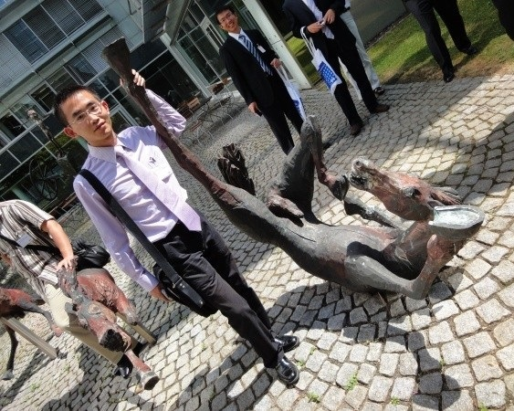

蒋凌翔 教授 / Lingxiang Jiang Professor
E-mail: jianglingxiang@scut.edu.cn
个人简介：蒋凌翔，华南理工大学前沿软物质学院，教授，博士生导师。 作为负责人主持国自然优青项目（2021）；面上项目（2017）；广东省杰青项目（2017）； 珠江人才计划青年拔尖人才（2017）等多项科研项目。
Biography: Personal profile: Jiang Lingxiang, professor and doctoral supervisor at the School of Frontier Soft Materials, South China University of Technology. As the person in charge, hosted a number of scientific research projects such as the National Natural Youth Excellent Youth Project (2021); the general projects (2017); the Guangdong Outstanding Youth Project (2017); the Zhujiang Talent Program Youth Outstanding Talents (2017).
Professional Experience:
2020 - 至今
华南理工大学教授 / Professor
South China University of Technology
2016 - 2020
暨南大学研究员 / Professor
Jinan University
2012 - 2015
伊利诺伊大学香槟分校博士后 / Postdoc
University of Illinois at Champaign Urbana
Education:
2007 - 2012
北京大学博士 / Ph.D.
Peking University
2003 - 2007
北京大学学士 / B.S.
Peking University